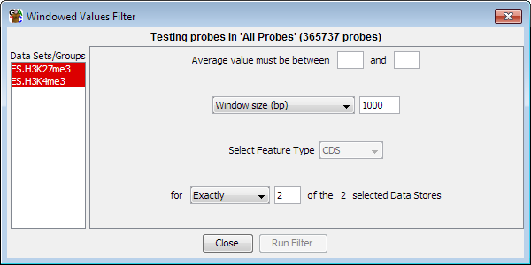

Windowed Value Filter
The windowed value filter acts in a very similar way to the
Individual Probe Value Filter
except that it averages the values of all probes in a window and tests the
mean value.

Options
- You need to select one or more DataStores from the list on the left. Data
Sets are shown in red and Data Stores are shown in Blue.
- You can select an upper and a lower limit for the range of values you want
to include. You only have to specify one of these values. If you leave the lower
value blank then anything under the upper cutoff will pass. If you leave the upper
value blank then anything above the lower cutoff will pass.
- You can select how to construct the windows inside which the value test will
be performed. This can be expressed either as a fixed number
of bases, or as a number of consecutive probes to slide over the genome. You can also choose to use a class of
features as the windows in which to aggregate probes.
- Finally you can choose in how many of your selected DataSets a probe needs to fall
within your defined range in order to be included in the final list.